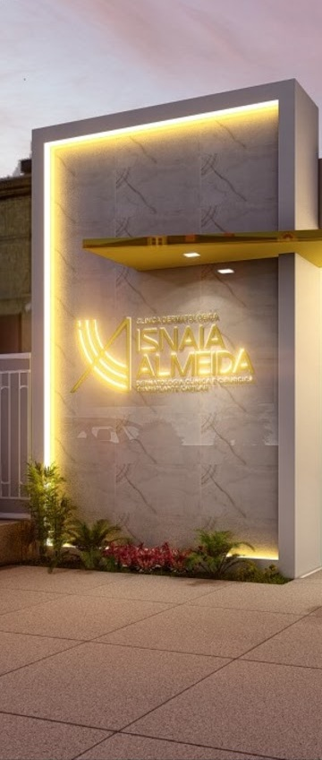

Início · Consultório
No Centro de Paulo Afonso.
Saiba como chegar.
Clínica Dermatológica Isnaia Almeida, Avenida Apolônio Sales, 848. Endereço, canal da recepção e orientações para organizar sua visita.
Onde atende
Av. Apolônio Sales, 848

Clínica Dermatológica Isnaia Almeida
Avenida Apolônio Sales, 848
Centro · Paulo Afonso – Bahia
CEP 48601-208
O endereço converge no perfil da SBD, no cadastro da unidade e no perfil profissional da médica. A foto é um recorte vertical da fachada, não uma vista panorâmica.
Conferir endereço na SBD ↗Como chegar
Planeje o caminho até o consultório
Use a rota do perfil da clínica no Google Maps. Se o mapa incorporado não aparecer, o endereço e o botão abaixo continuam disponíveis.
Contato publicado pela clínica
Fale com a recepção
WhatsApp: (75) 99132-4511
Esse é o canal da recepção publicado no Linktree da clínica. Não é apresentado como celular pessoal da Dra. Isnaia.
Consultar disponibilidadeEsta prévia não reserva horários, não recebe dados de saúde e não envia mensagens automaticamente.
Antes de sair
Organize o que gostaria de conversar
- Anote sua queixa principal e quando começou.
- Leve exames e receitas anteriores relacionados, se tiver.
- Tenha a lista de medicamentos, suplementos e produtos em uso.
- Confirme com a recepção as orientações específicas para a visita.
Informação atual
Agenda e condições: confirme com a equipe
Horários semanais, convênios e valores não foram confirmados para esta demonstração. Por isso não há tabela de horários ou indicador de atendimento aberto agora.
Antes de se deslocar, combine sua visita com a recepção. A disponibilidade de consulta e de avaliação de procedimentos deve ser confirmada diretamente.
Acessar o canal de atendimento ↗Dúvidas frequentes
Perguntas comuns
Qual é o endereço?
Avenida Apolônio Sales, 848, Centro, Paulo Afonso – BA, CEP 48601-208, na Clínica Dermatológica Isnaia Almeida.
Como confirmar um horário?
Entre em contato com a recepção pelo WhatsApp (75) 99132-4511 e aguarde a confirmação da equipe.
A clínica atende por convênio?
Essa informação não foi confirmada para a prévia. Pergunte à recepção sobre as condições atuais de atendimento.
O site envia minha mensagem automaticamente?
Não. O botão abre o WhatsApp; o envio, se desejado, é uma ação sua no aplicativo. Não há formulário de agendamento nesta prévia.
Seu próximo passo
Uma conversa começa com as suas dúvidas.
Entre em contato com a recepção para confirmar a disponibilidade de consulta em Paulo Afonso.